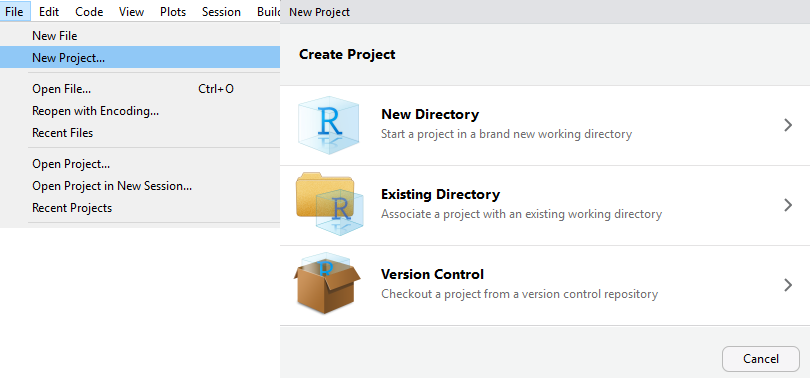

cat("Hi my names is Justin. I work at NC State.")Hi my names is Justin. I work at NC State.Hopefully you now have some idea about the purpose of git/github. Github is an online hosting service for git repositories. If you’ve never used git and GitHub before it is really quite intimidating. Let’s start with some practice!
Once you’ve completed the above part. You should download git to your computer.
Now read through the introduce yourself to git chapter of happygitwithr.
Great, now try to work through chapters 9, 11, and 12.
Mostly you’ll want to work on your local computer. Install git on your computer!
Workflow:
(Initially) clone the repo locally. (Later) pull to get most recent versions of files from the remote (GitHub)
Work and make changes
add and commit to changes you like
push changes to remote repo (on github)
When considering our data science workflow, we want to have a seamless way to
All of this can be accomplished using R projects with git and github!
First, it is important to know that we are going to be reading in some files locally. That is, from a folder somewhere on your computer (as opposed to reading a file in from the web). That means we need to be able to tell R where a file exists on our computer.
How does R locate the file?
We can give a full path name to the file
C:/Users/jbpost2/Documents/Repos/ST-558/datasets/C:\\\\Users\\\\jbpost2\\\\Documents\\\\Repos\\\\ST-558\\\\datasetsNote: The \ character is called an escape character. This allows us to use different symbols and things when we are working within a string of text. For instance, \n is a line break. The \ tells R to interpret the next character(s) in a different way than usual.
For example (cat is kind of like a different version of a print function):
cat("Hi my names is Justin. I work at NC State.")Hi my names is Justin. I work at NC State.with the \n in there we get a line break:
cat("Hi my names is Justin.\nI work at NC State.")Hi my names is Justin.
I work at NC State.Therefore, when we specify a path to a file as a string, if we try to use a \ we actually need two \\ so that R knows we actually want a \! Confusing I know. But, we can just replace \ with / in paths to files to avoid that.
Full path names are not good to use generally!
R’s current working directory (the place it looks by default)Determine R’s working directory via getwd() (get working directory)
getwd()[1] "C:/Users/jbpost2/repos/eCOTS_2024"Now if I had my file in the same folder as my working directory, I don’t need to use a full path as R is looking in that folder by default. If I had the file chickens.csv in my working directory, I could tell R where it is via something like:
read.csv("chickens.csv")setwd() (set working directory)setwd("C:/Users/jbpost2/Documents/Repos/ST-558/datasets/")Ok, but our goal is to share our code with others so they can run it. We could say to our collaborators, “just to update that one line of code to change your working directory and make sure to have all the files in the same directory that we use for this analysis.” Clearly, that isn’t an efficient way to work….
Instead we can use R projects!
R projects provide a straightforward way to divide your work into multiple contexts. Each with their own:
They are very easy to create!

When you create an R project, you might note that it gets associated with a directory (or folder or repo). That folder is what the project uses as the working directory.
This is important! This means if we can share an entire folder (with subfolders and everything else in the same relative place), another user can pick up an R project and the paths to things should work! (Assuming we’ve used relative paths for everything.)
That’s exactly how we’ll use R projects with github! Github is a remote folder (that can have subfolders and what-not). If we associate an R project with that folder and upload that, another user can download it and open that R project, allowing them to work seamlessly!
You might create a new project for materials related to this course or for each homework assignment etc. It is up to you how much clarity you want on a specific folder/project you are working on.
Note you can quickly switch between projects in the upper right hand of RStudio or via the File menu.
Ideally we want to document our process, easily collaborate, and widely share our work
For reproducibility, ideally we would save different versions of our analysis, write-up, etc. along the way
Remember that git is a version control software to help:
commit to the filesgithub is a hosting service that allows us to do Git-based projects on the internet and share them widely!
Recall our basic workflow. First we create a repo on github (remotely). We then associate a folder on our local computer with that repo using git. Then we:
git pull) or do initial download (git clone)git add)git commit)git push)Let’s go through some explicit steps to do this! Make sure you’ve downloaded git to your machine already (see earlier material on git/github)!
We don’t want to use github.com web interface as that is inefficient.
We can clone the repo (i.e. download the entire repo locally).
Repo main page has a green button. Click on that.
Better to clone the repo via the URL and use RStudio! Open RStudio,
Now have the files locally and this associates an R project with a git repo!
Try it with my repo here: https://github.com/jbpost2/ZScores.git
Try this out on your own! Create your own repo on github. Then try to download it as an R project.
We need to make sure RStudio and github can communicate. This can sometimes be tough to get working! Do the following:
Git tab in your Environment areaadd files that you’d like to commit up to the remote repogit add -A when using the command line) and click the Commit buttoncommit button (equivalent to git commit -m "message" when using the command line)git push when using the command line)When working by myself on a repo, I’m not worried about merge conflicts with other people’s changes. As such, my workflow is as follows:
git pullgit add -A to add all files that have been modifiedgit commit -m "Message" to stage a commitgit push to push the local changes to the remote repoSometimes you’ll have an R project that already exists but you don’t have a corresponding repo on GitHub. The easiest way to get that project into a repo is to do the following:
add, commit, and push up the filesPlease pop this video out and watch it in the full panopto player!
Check here for information about creating a web site with quarto and GitHub.